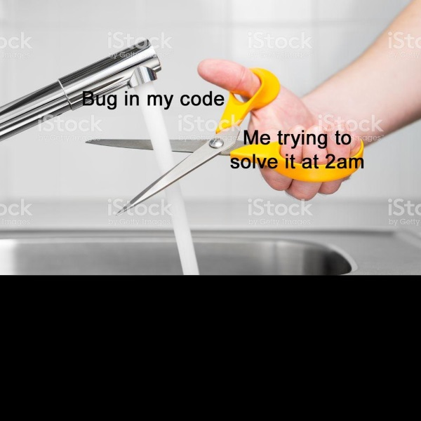

On Image Dimensions¶
Most of the Machine Learning applications built with image data in mind expect a consistent, often square, image resolution on all of the observations you pipe in.
This means that one must consider:
- Oblong, non-square images
- Images of different sizes
For purposes of demonstration, let’s consider three images that were deliberately rectangular and of mismatched sizes (here, stacked together)

Resolving Rectangles¶
Before we do any image rescaling, we first ensure that all of our data is a square. We do this by padding our images with (R, G, B) = (0, 0, 0) black, anchoring the image in the top-left.
I like how paint.net illustrates this.

This will give an image like the following
{kind=link}
Resolving Image Sizes¶
We coded up two approaches for handing differences in image resolutions, flexible to your use case. Both of which correspond to the --consider_size, -c argument you specify when running kneejerk transfer at the command line.
Setting consider_size=False, the default¶
If you want the size/resolution of your input images to have no bearing on the results of your algorithm/analysis, use this argument.
After padding each image to a square, it will either up or downscale each image to the same uniform size. (See Rescaling Images for more on this.)
Your resulting images will look like this, layered for comparison.
{kind=link}
Setting consider_size=True¶
Alternatively, maybe the size of your image is of some importance. Setting this argument to True will parse through your input directory to find the largest height/width dimension, and then pad every single image with black until it achieves that resolution.
Again, we’ll layer the resulting images for comparison.
{kind=link}
Rescaling Images¶
Finally, regardless of which image-size-mismatch scheme you elect to use, the final step of the internal transfer() method handles for you is rescaling each image to some predetermined n X n size, that we call --rescale_len. The default is 200.
This is commonplace, especially for large images/datasets, as it lowers the memory strain needed to run through your algorithms.